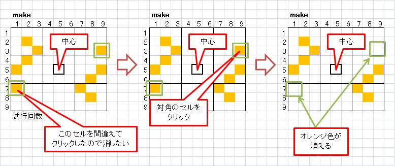
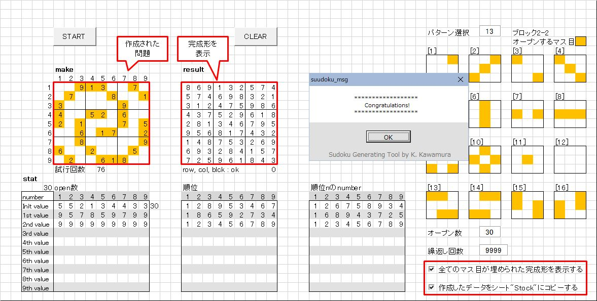
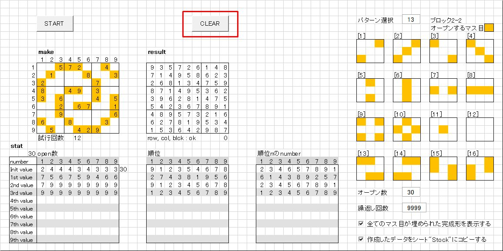
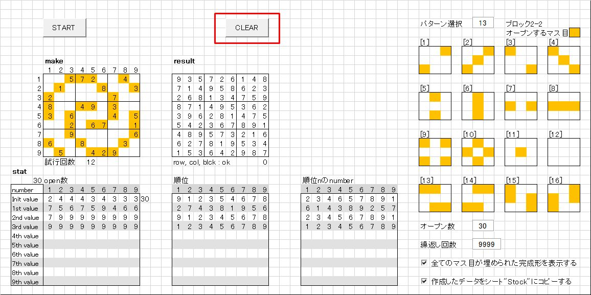
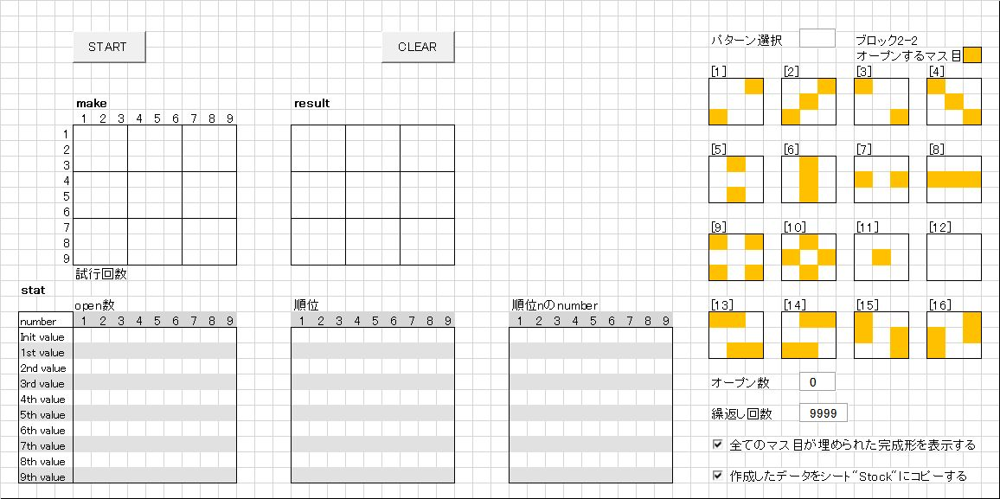

数独問題作成ツール 別解法
これまで公開してきた｢数独問題作成ツール｣ (以下、｢数独ツール｣と略記します)は、最初に9x9の全てのマス目を埋めた完成形を作成し、
ブランクにできるマス目を、増やせるだけ増やしていくという方法で問題を作成していました。
詳細は
suudoku_doc
をご一読下さい。[※1]
この方法では最初にオープンするナンバーのマス目の数(以下オープン数と略記)が23以上の問題を作ることができます。
しかし、オープンするマス目のパターンはランダムに選ばれるため、
自分が思い描いたパターンの問題を作ることはできませんでした。
[※1]
併せて｢数独数独問題作成ツール アップデート｣もご覧下さい。
リンク：
suudoku_update01
別解法は、自由なパターンの問題を作成します
問題作成方法を順に説明します。
-
エクスプローラーから｢z.suudoku_04.xlsm｣を開きます。

-
パターンの作り方から問題作成までを説明します。
-
｢make｣と表示されている枠内でオープンするマス目をオレンジ色で埋めて行きます。
枠内の適当なセルをクリックすると、そのセルと対角のセルがオレンジ色に変わります。
-
思い描いたパターンを作って行きます。
消したい場合は、対角のセルをクリックするとオレンジ色が消えます。 -
作成したパターンの例を以下に示しました。

｢START｣ボタンを押すと問題作成が開始されます。
-
問題の作成の成功すると、以下のような画面になります。
オレンジ色のセルにオープンするナンバーが書き込まれていることが分かります。
画面右下のチェックボックスがチェックされている場合は、
完成形が表示され、シート｢Stock｣に作成された問題がコピーされます。 -
「CLEAR」ボタンを押すと、起動時の画面に戻ります。
 


-
オープンするマス目の数について
28～32くらいが面白いパターンが作れますし、実際に解くときも無理なく解くことができると思います。
私がデバッグ中に調べた限りでは、25以上で問題が作成できることを確認しています。
ダウンロード
このツールを使用するにあたって
- このツールの無断転載を一切禁止します。
- ロジックの改善、改良をお考えの場合は、ご連絡頂ければソースコードをお送り致します。
z.suudoku_04.zip をクリックして、ダウンロードして下さい。